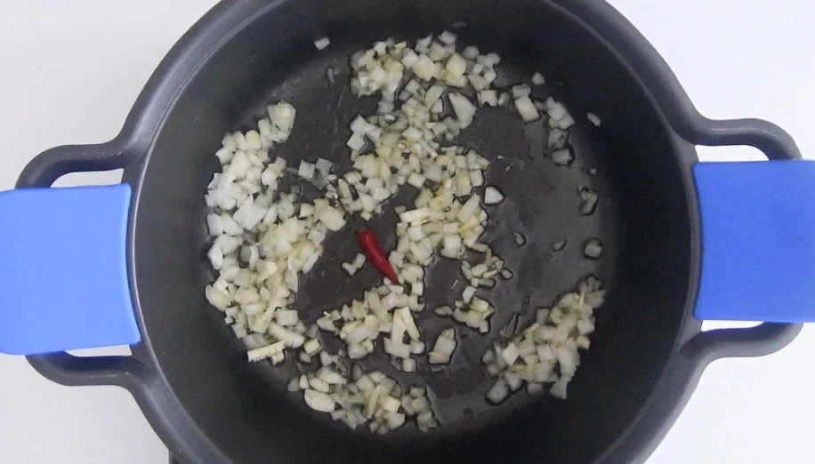
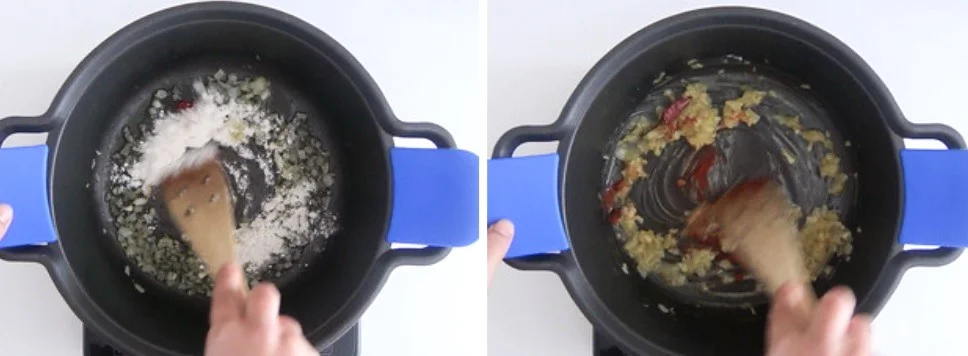
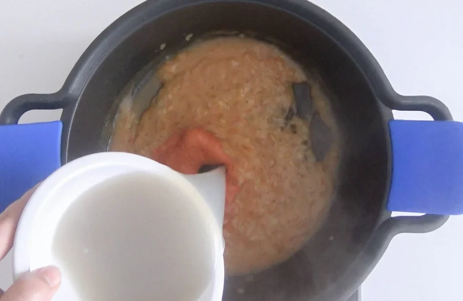
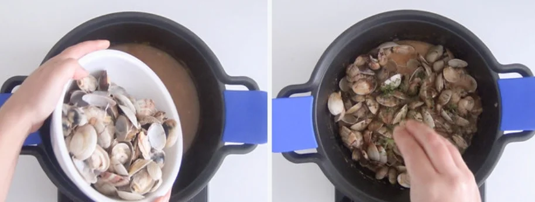

Inicio
Primer plato: Almejas a la marinera

- 2 k de almejas limpias de arena (la variedad que más te guste)
- 2 dientes de ajo
- 2 cebollas
- 1 hoja de laurel
- 75 ml de aceite de oliva virgen extra
- 2 cucharadas de harina de trigo (en caso de intolerantes al gluten podéis emplear almidón o harina de maíz)
- 2 cucharadas de perejil picado
- 2 cucharadas de salsa de tomate casero
- 1 cucharada de pimentón dulce
- 1 guindilla
- 1 vaso de vino blanco
- Sal y pimienta negra o blanca recién molida (al gusto)
Antes de cocinar las almejas
- Es fundamental quitar bien la arena que suelen traer las almejas para que no sea molesta y no nos estropee la receta. Conviene tenerlas unas tres horas antes de cocinarlas en una cazuela o recipiente grande de plástico. Debemos añadirles agua, un buen puñado de sal gruesa (50/60 grs por litro de agua) y cambiarles tres o cuatro veces el agua.

- Las almejas beben y suelen soltar bastante arena. No os asustéis porque es señal de que la almeja es de buena calidad, directamente traída de la arena de la Ría de Pontevedra. Intenta comprar las almejas vivas y cocinarlas el mismo día que vas a tener la comida o cena de Navidad. Así aprovecháis la buena calidad de la almeja y a la hora de comer estará en su punto.
- Para que salgan de rechupete os aconsejo abrirlas en un poco de líquido para evitar males mayores. Alguna de ellas no se suelen abrir y las tendremos que tirar, también las que estén rotas. Para hacerlas en la cazuela lavamos muy bien las almejas en agua fría y quitamos todas las impurezas.
- Ponemos a calentar medio vaso de vino blanco en la cazuela. Cuando el vino blanco empiece a hervir añadimos una hoja de laurel y a continuación las almejas.
- Las dejamos cociendo tapadas unos 2 minutos (desde que esté el líquido hirviendo a tope) y en cuanto estén todas abiertos las retiramos con una espumadera. Dejamos enfriar y reservamos en una fuente. El agua de la cocción (resultante del vino y lo que sueltan las almejas) no la vamos a tirar, la colamos y dejamos en un vaso.

Preparación de la salsa de las almejas
- Pelamos las cebollas y los ajos. Quitamos el centro del ajo para que no repita ni pique. Troceamos finamente las cebollas, los dientes de ajo y el trocito de guindilla (si nos os gusta ese toque picante ya sabéis, obviad este ingrediente).

- Deben quedar trocitos muy pequeñitos, con el fin de que al final del guiso no se aprecie ninguno de los dos ingredientes. Ponemos la cazuela que hemos empleado para hacer las almejas al vapor con el aceite de oliva y añadimos la cebolla y el ajo. Cuando esté todo bien pochado y con un característico color tostado.
- Añadimos el pimentón dulce y removemos a fuego lento durante 1 minuto. Importante que no se queme o se nos estropeará la salsa. Espolvoreamos la harina en la cazuela y removemos con cuidado para mezclarla bien. El efecto de la harina con la cebolla y sobre todo el aceite se llama Roux, nos ayudará a ligar y espesar la salsa.

- Dejamos que se cocine tomando algo de color pero sin que se queme. Perfecto, ya tenemos la base de la salsa marinera. Añadimos el vaso de vino blanco. Emplead siempre un buen vino, el mismo que vayáis a beber en la comida, la receta os lo agradecerá.

- Removemos espesando la salsa y dejando que se evapore el alcohol. Introducimos lo que ha quedado del agua de hacer las almejas al vapor y el tomate frito casero. Dejamos que espese durante unos 10 minutos a fuego medio sin dejar de remover.
Preparación de las almejas a la marinera. Presentación final
- Probamos de sal y si hiciese falta, salpimentamos si es necesario. Aunque normalmente no es necesario añadir sal, la que deja el jugo de las almejas es suficiente. A continuación añadimos las almejas que ya teníamos seleccionadas y abiertas al vapor.
- Ligamos la salsa y las almejas un par de minutos removiendo con mucho cuidado. Esperamos un par de minutos más con el fuego apagado hasta que las almejas se impregnen bien de la salsa. Servimos inmediatamente en una cazuela de barro o una bandeja grande espolvoreando con el perejil picado. Tened preparada la barra de pan que más os guste. Os aseguro que el saborcillo de esta salsa es espectacular.

Volver a arriba